Method, Results, and Discussion: Human-AI Design Reasoning and Student Agency in GenAI-supported Sustainable Building Design
3. Method
The study used a profile-centered mixed-methods learning analytics design with an embedded one-group pretest-posttest component. The design was selected to examine learning outcomes, human-AI design processes, and student learning agency within the same GenAI-CAD learning activity.
3.1. Learning context and task
The study was conducted in the context of a sustainable building design activity using Aladdin, a GenAI-based CAD tool. Students completed a challenging net-zero energy house design task. The task required students to interact with the system across design iterations, generate or revise house designs, interpret AI-generated reasoning, and make design decisions related to building form, energy use, climate/site constraints, solar performance, and engineering feasibility. The required design genre included a colonial-style house; therefore, the term colonial was treated as a task requirement rather than a student-initiated visual or stylistic design choice in the log coding.
3.2. Data sources
Four primary data sources were used. First, pre- and post-assessments measured students' conceptual understanding of sustainable building design and related STEM engineering concepts. The assessment included items addressing insulation, R-value, U-value, greenhouse effect, roof color, solar design, thermostat placement, passive solar design, and net-zero design strategies. Second, system log data captured student prompts, AI-generated reasoning, design iterations, and energy-related design metrics. Third, a learning agency survey measured students' perceived agency in the GenAI-supported design process. Fourth, open-ended survey responses and interview transcripts provided qualitative evidence of planning, adjustment, reflection, ownership, and perceived control.
| Data source | Sample / scope | Primary analytic role |
|---|---|---|
| Pre/post assessment | 124 pre-test rows; 74 post-test rows; 68 matched pre/post students | Conceptual learning gains and adjusted outcome modeling for RQ1 |
| Design log data | 75 project records; 70 projects with valid interaction trajectories | Human-AI design reasoning trajectory reconstruction, designer profiles, and ENA-style network analysis for RQ2 |
| Learning agency survey | 38 responses; 12 survey responses matched to log/profile records | SLA-GAI-aligned agency scoring and exploratory survey-log integration for RQ3 |
| Open-ended responses and interviews | Survey open-ended responses and transcript files | Qualitative explanation of agency, ownership, and human-AI role negotiation |
3.3. RQ1 analysis: Conceptual learning gains
RQ1 was examined using matched pre/post assessment scores. Descriptive statistics were first computed for pre-test, post-test, and raw gain scores. An ANCOVA-style adjusted gain model was then estimated with gain score as the dependent variable, pre-test score as a covariate, and class as a control variable:
ANCOVA-style model: gain = post-test score - pre-test score; gain ~ pre-test score + class.
To account for repeated observations nested within students, a student random-intercept mixed model was also estimated:
Mixed model: score ~ time + class + (1 | student), where time was coded as 0 for pre-test and 1 for post-test.
In addition to total-score models, an item-level analysis was conducted to identify which sustainable building concepts changed from pre-test to post-test. For each of the 12 assessment items, the correct-response rate was calculated separately for pre-test and post-test responses in the matched sample. Item gains were reported as post-test minus pre-test percentage points. Items were also grouped into four conceptual themes: insulation / R-value / U-value, solar / passive solar / net-zero, windows / sunlight / radiant heat, and HVAC / thermostat / energy use.
Interview data were used to triangulate the item-level assessment patterns. Transcript excerpts were reviewed deductively using the same conceptual themes. Evidence was treated as thematic support when students described a relevant design idea, such as insulation and R-value, solar panels and net energy, windows and sunlight, or location-related heating and cooling demand. This interview-analysis layer was used to interpret how students talked about concepts that also appeared in the pre/post assessment, rather than as a stand-alone qualitative outcome analysis.
Because the study did not include a randomized control group, results are interpreted as evidence of conceptual gains following participation in the GenAI-CAD activity rather than causal evidence that GenAI alone produced the gains.
3.4. RQ2 analysis: Human-AI design reasoning trajectories and designer profiles
To examine how students became different types of designers, the design log data were reconstructed as human-AI design reasoning trajectories. Each trajectory linked a student prompt, the AI-generated reasoning response, and the student's subsequent prompt or design change:
Trajectory unit: student prompti -> AI reasoningi -> next student prompti+1 / design metric change.
Rule-based content coding was applied to each design iteration. Prompt-side codes captured technical parameter use, performance-goal prompting, visual/spatial focus, and off-task divergence. AI reasoning-side codes captured energy reasoning, parameter recommendation, climate/site reasoning, trade-off reasoning, and feasibility reasoning. Human-AI coupling codes captured whether concepts in the AI reasoning were taken up in the next student prompt.
| Code family | Codes | Interpretation |
|---|---|---|
| Prompt-side indicators | Technical parameter; performance goal; visual/spatial focus; off-task divergence | How students framed their design requests and whether prompts reflected engineering or surface-level design intentions |
| AI reasoning indicators | Energy reasoning; parameter recommendation; climate/site reasoning; trade-off reasoning; feasibility reasoning | What forms of engineering reasoning were generated by the AI tool |
| Human-AI coupling indicators | Direct uptake; selective uptake; transformative uptake; no uptake; weak/off-task coupling | Whether and how students incorporated AI reasoning into subsequent design moves |
Iteration-level codes were aggregated to student-level indicators. Six indicators were entered into a latent-profile-style model-based clustering analysis: technical parameter density, performance goal density, energy reasoning density, AI reasoning uptake rate, transformative uptake rate, and off-task ratio. Candidate two-, three-, four-, and five-profile solutions were compared using BIC, entropy, profile size, and interpretability.
To further explain how students moved through the prompt-based design process, a second strategy-level coding layer was added to the RQ2 analysis. Whereas the profile model summarized aggregate behavioral indicators, the strategy analysis treated the ordered prompt sequence as a design trajectory. Each prompt was first coded for its dominant prompt state: parameter-focused, performance-oriented, site-focused, detail-descriptive, off-task, or general. Student-level trajectory features were then derived from the full sequence, including prompt retention similarity between adjacent prompts, added design-token count, number of distinct sites, site-shift count, parameter-specific prompt rate, performance-outcome prompt rate, visual-detail rate, and off-task rate.
| Strategy | Operational definition | Process interpretation |
|---|---|---|
| Cumulative incremental | Students preserved much of the prior prompt while adding new components or constraints across iterations. | Linear accumulation of design requirements toward an evolving goal. |
| Site exploration | Students used location as a major design variable, with multiple distinct cities, states, countries, or climates. | Exploration of how place, climate, or geography shaped design possibilities. |
| Detail-descriptive | Students emphasized concrete visual or spatial details such as color, size, doors, windows, roof, pool, or surroundings. | Use of GenAI-CAD as a visible design generation and specification tool. |
| Parameter-driven | Students used measurable technical terms such as R-value, U-value, setpoints, COP, PV model, glazing, or overhang. | Technical control of the generated building through engineering parameters. |
| Performance-oriented | Students directly requested an energy or performance outcome such as net zero, zero energy, no power, or reduced energy use. | Outcome-directed prompting rather than component-by-component specification. |
| Off-task / imaginative exploratory | Students shifted toward playful, fictional, transgressive, luxurious, or otherwise task-divergent requests. | Exploratory or weakly coupled prompting that may or may not remain connected to engineering design. |
The strategy analysis was integrated with the model-derived designer profiles, pre/post assessment records, agency survey scores, and ENA-style network coordinates. Strategy-profile alignment was examined using cross-tabulation and Cramer's V. Learning and agency comparisons by strategy were treated as exploratory because assessment and agency matching reduced the available sample sizes.
3.5. RQ3 analysis: Learning agency
Learning agency was analyzed using a profile-informed mixed-methods agency analysis. Survey items were grouped according to the Student Learning Agency in Generative AI-supported contexts framework. The analyzed dimensions included self-cognition, goal setting, self-adjustment, self-reflection, selective action, responsible action, participative action, motivation, and self-efficacy. Volition was not analyzed as a separate dimension because the survey did not include a dedicated volition item.
Dimension scores were computed as the mean of corresponding items. Reliability was examined using Cronbach's alpha for two-item dimensions and the overall agency scale. Survey-based agency scores were then integrated with RQ2 log-based indicators for the subset of matched students. Given the limited survey-log matched sample, survey-log correlations and profile-informed comparisons were treated as exploratory.
Open-ended responses were coded deductively using agency-related themes: planning/goal setting, adaptive prompting, AI reasoning monitoring, selective reliance, ownership protection, peer-supported agency, agency expansion, agency constraint, and future control support.
3.6. ENA-style co-occurrence network analysis
To connect RQ2 and RQ3, an ENA-style co-occurrence network analysis was conducted. Each design episode was treated as a stanza, and each student/project was treated as a unit. Ten nodes were included: GoalPrompt, TechPrompt, VisualSpatial, AIEnergy, AIParameter, AIClimate, AIFeasibility, SelectiveUptake, TransformUptake, and OffTask. For each stanza, co-occurrence edges were generated among active codes. Student-level network vectors were created by aggregating and normalizing edge counts across stanzas. Centered network vectors were projected into two dimensions using singular value decomposition.
ENA-style analysis was used in three ways: first, to compare networks across designer profiles; second, to compare networks by post-test conceptual understanding and learning gain; and third, to compare networks by pre-test conceptual understanding. These network comparisons were interpreted as exploratory process evidence linking human-AI reasoning structures to learning outcomes.
4. Results
4.1. RQ1: Conceptual learning gains
Students demonstrated significant conceptual gains after participating in the GenAI-supported CAD design activity. In the matched sample (n = 68), students' mean score increased from 5.53 (SD = 2.98) at pre-test to 7.07 (SD = 3.98) at post-test on a 12-point assessment. The average raw gain was 1.54 points (SD = 3.71), 95% CI [0.65, 2.44], paired t(67) = 3.43, p = .001, dz = 0.42.
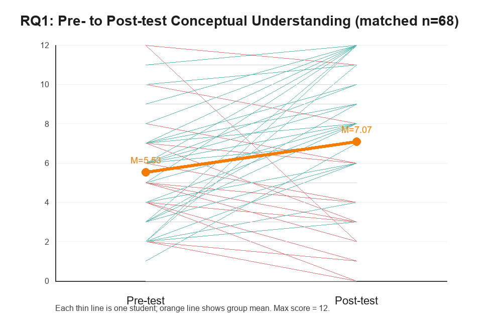
The ANCOVA-style adjusted gain model confirmed this improvement. After controlling for pre-test score and class, the adjusted mean gain was 1.54 points (SE = 0.44), t(61) = 3.54, p < .001, 95% CI [0.67, 2.42]. Pre-test score was a significant covariate, F(1, 61) = 5.92, p = .018, partial eta squared = .088. The class block was not significant, F(5, 61) = 0.67, p = .651. The negative relationship between pre-test score and gain suggests that students with lower baseline scores tended to gain more.
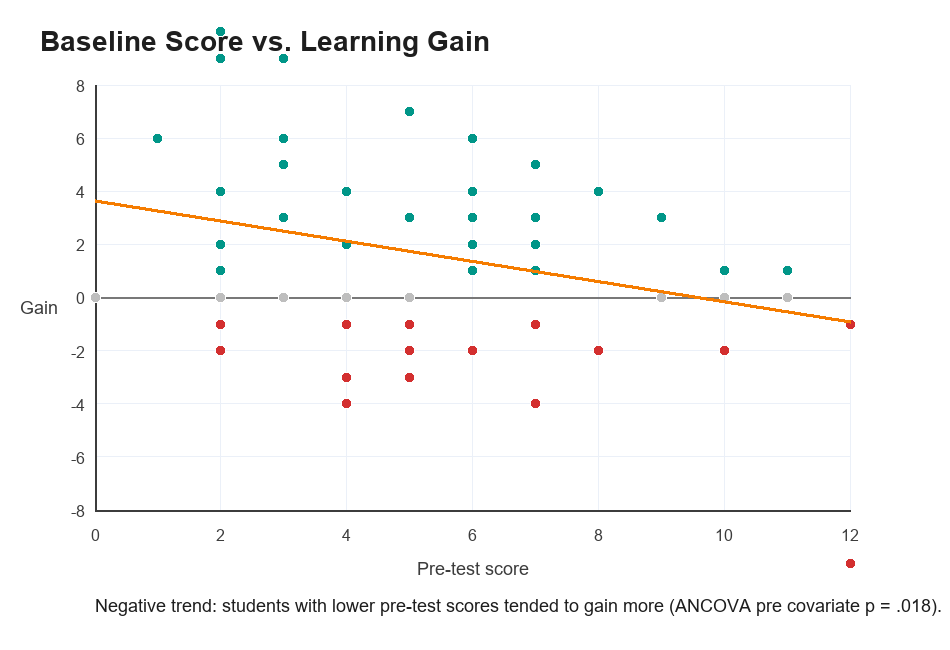
The mixed model further supported the same conclusion. In the model score ~ time + class + (1 | student), the time effect was significant, b = 1.54, SE = 0.45, z = 3.46, p < .001, 95% CI [0.67, 2.42]. The intraclass correlation was .43, indicating substantial stable differences among students and supporting the use of a random-intercept model.
Item-level analysis showed that the total-score gain was distributed unevenly across sustainable building concepts. In the matched sample, the largest item gains were observed for R-value (Q2: 32.4% to 58.8%, +26.5 percentage points), solar panel orientation (Q12: 27.9% to 54.4%, +26.5 percentage points), U-value (Q4: 25.0% to 50.0%, +25.0 percentage points), thermostat setback (Q8: 47.1% to 64.7%, +17.6 percentage points), and passive solar overhangs (Q10: 29.4% to 47.1%, +17.6 percentage points). These gains suggest improvement in several concepts that were directly relevant to the GenAI-CAD house design task.
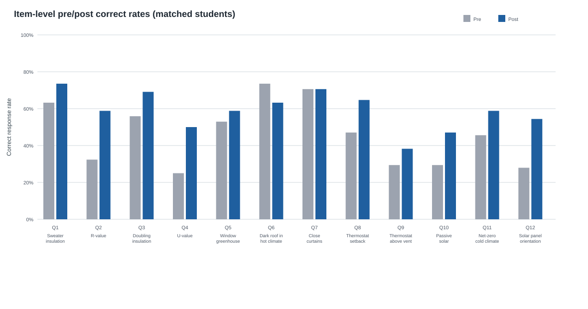
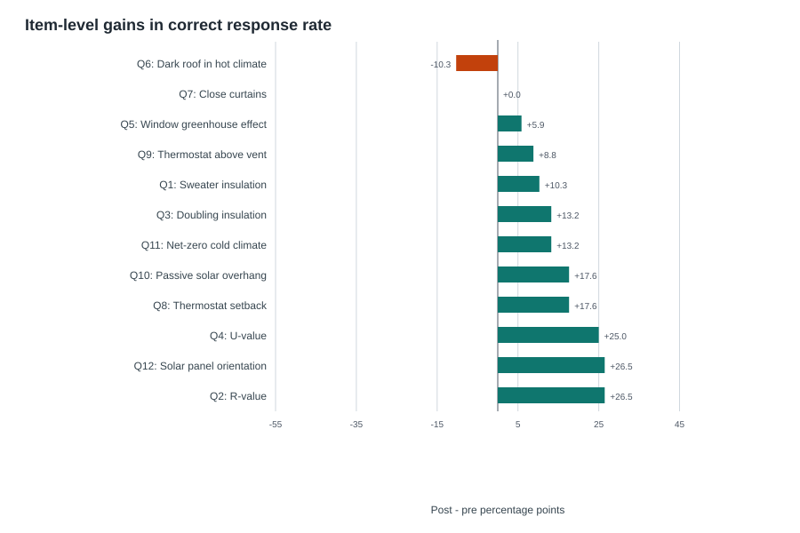
Aggregating items by conceptual theme showed that the strongest average gains were for solar / passive solar / net-zero concepts (+22.1 percentage points), followed by insulation / R-value / U-value concepts (+17.6 percentage points) and HVAC / thermostat / energy-use concepts (+13.2 percentage points). In contrast, the windows / sunlight / radiant heat theme showed little average improvement (-1.5 percentage points), largely because Q6 declined and Q7 remained unchanged.
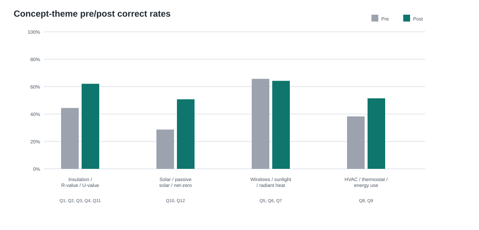
Interview evidence helped explain the concepts that students appeared to appropriate during the design activity. Students explicitly discussed insulation as an energy-saving strategy and connected insulation to R-value. For example, one student explained that designers "have to take insulation into consideration" to save energy, and Enil stated that adding insulation increases the R-value. Students also described solar panels as a way to reduce the net energy level, and Raul and Enil connected location to heating, air conditioning, and energy use. These themes align with item-level gains for R-value, U-value, solar-panel orientation, thermostat setback, and net-zero cold-climate insulation.
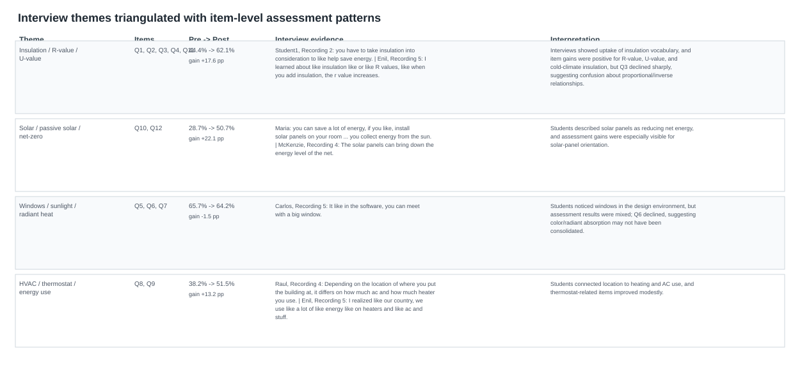
One exception was Q6, which asked why dark-colored roofs are generally avoided in hot, sunny climates. Correct responses decreased from 73.5% to 63.2%. The answer-choice distribution suggests that the decline was not caused by a single dominant misconception, but by a modest shift toward "dark colors have a higher specific heat" and "I still don't know." Prompt-log review also suggests a possible instructional explanation: many students prompted for roofs, solar panels, colors, or black visual features, but very few prompts connected roof color to hot climate, sunlight, and radiant energy absorption. Thus, roof/color appeared frequently as a visible design feature, but the physics mechanism behind dark-roof heat gain may not have been consolidated.
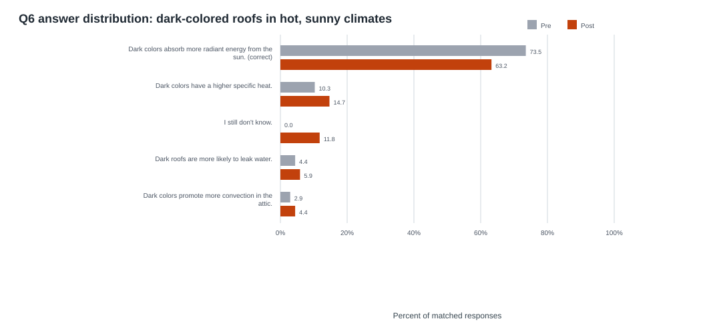
4.2. RQ2: Designer profiles from human-AI design reasoning trajectories
The final no-colonial coding analysis included 70 valid student/project trajectories. A five-profile solution was retained because it had the lowest BIC, high entropy (.988), and no profile smaller than seven students. The retained profiles were: AI-guided technical optimizers, technical prompt composers with limited uptake, visual-spatial generators, off-task but technically iterative designers, and off-task weak-coupling explorers.
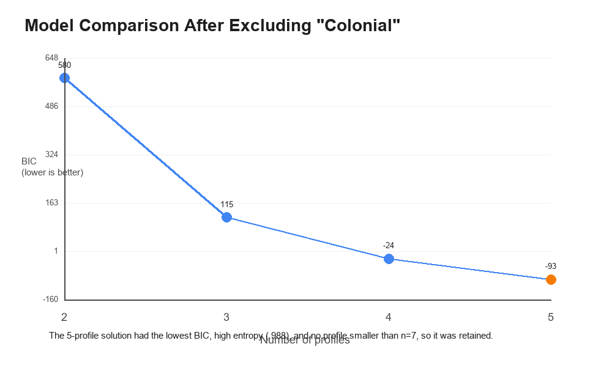
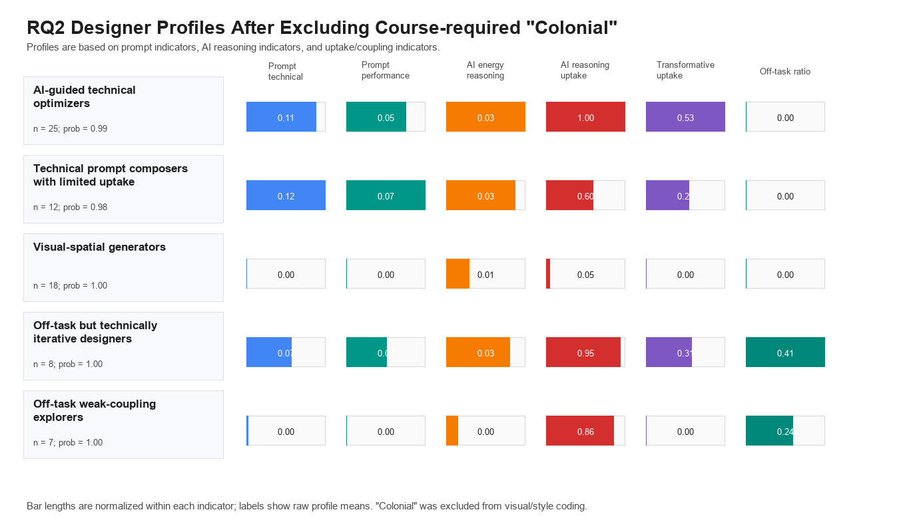
| Designer profile | n | Core pattern | Interpretation |
|---|---|---|---|
| AI-guided technical optimizers | 25 | High AI reasoning uptake (1.00), high transformative uptake (.53), no off-task divergence | Students repeatedly transformed AI reasoning into technical and performance-oriented design revisions. |
| Technical prompt composers with limited uptake | 12 | High technical and performance prompting, moderate uptake (.60) | Students expressed technical intentions but did not consistently align subsequent prompts with AI reasoning. |
| Visual-spatial generators | 18 | Low technical/performance prompting, low uptake (.05), few iterations | Students used the tool primarily for visual or spatial generation rather than sustained engineering reasoning. |
| Off-task but technically iterative designers | 8 | High off-task ratio (.41), high iteration, high uptake (.95) | Students diverged from task goals but still engaged in technically iterative design work. |
| Off-task weak-coupling explorers | 7 | Off-task divergence, weak technical prompting, no transformative uptake | Students showed weak integration between AI reasoning and sustainable building design decisions. |
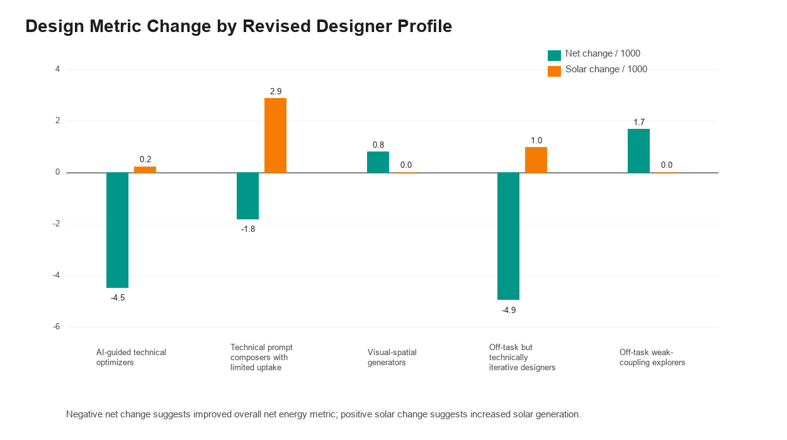
These profiles show that students did not merely differ in the frequency of prompting. They differed in how they coupled their own design intentions with AI-generated reasoning. Productive profiles were characterized by goal-directed prompting, technical parameter use, attention to AI energy/parameter reasoning, and selective or transformative uptake into subsequent design moves.
4.3. Prompt-based design strategies as process trajectories
To explain how students arrived at different designer profiles, the ordered prompt sequences were analyzed as prompt-based design strategies. The most common strategy was detail-descriptive prompting (n = 24), in which students primarily specified visible or spatial features such as color, windows, doors, roof, size, or surrounding environment. The next most common strategy was cumulative incremental prompting (n = 16), in which students preserved much of the previous prompt while adding new constraints or components across iterations. Other strategies included off-task / imaginative exploration (n = 12), site exploration (n = 8), parameter-driven prompting (n = 6), and performance-oriented prompting (n = 3). One case was classified as mixed / low-evidence.
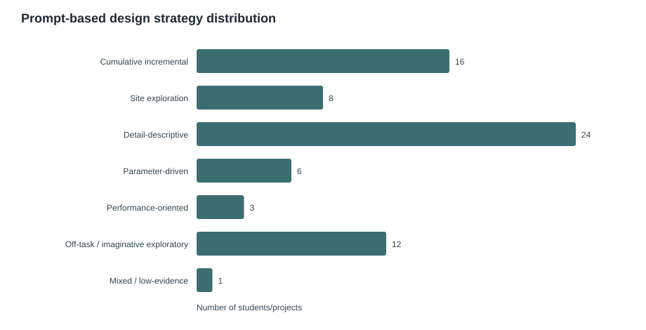
The strategy analysis showed that the model-derived profiles corresponded to recognizable design practices. Strategy-profile alignment was strong, with Cramer's V = .58. Cumulative incremental designers were concentrated in the AI-guided technical optimizer profile: 12 of 16 cumulative incremental students were AI-guided technical optimizers. Parameter-driven designers also aligned with technical profiles, with four of six classified as AI-guided technical optimizers and two as technical prompt composers with limited uptake. In contrast, detail-descriptive designers were primarily visual-spatial generators: 16 of 24 detail-descriptive students belonged to this profile. Off-task / imaginative exploratory designers were concentrated in the two off-task profiles, with seven classified as off-task but technically iterative designers and four as off-task weak-coupling explorers.
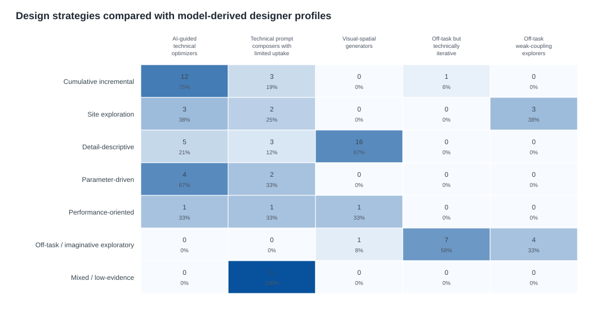
The trajectory strip plot illustrates these process differences at the prompt level. Cumulative incremental and parameter-driven trajectories tended to include repeated technical or design-relevant prompt states across multiple iterations. Detail-descriptive trajectories were often shorter and dominated by visible/spatial design states. Site exploration trajectories showed repeated shifts in location or climate, while off-task / imaginative trajectories moved in and out of task-relevant design states.
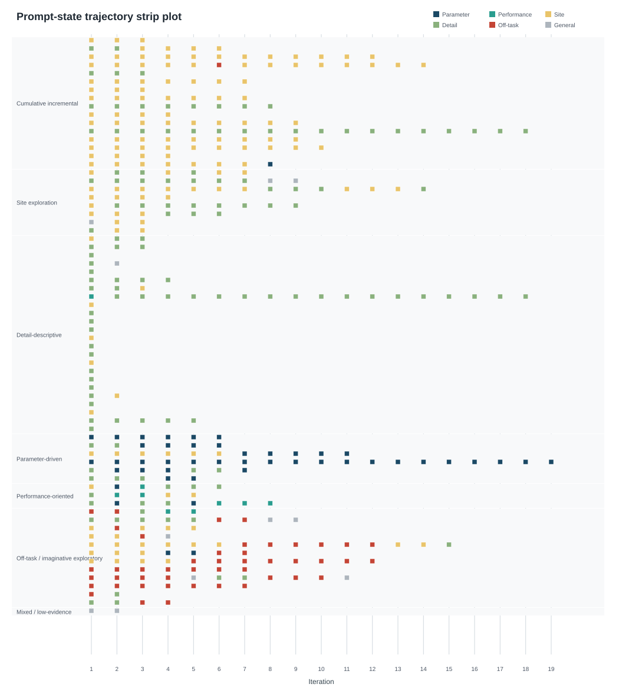
Strategy-level indicators further clarified how process trajectories related to human-AI coupling. Cumulative incremental designers had high AI reasoning uptake (M = .96), the highest transformative uptake (M = .51), and a strongly technical / AI-reasoning-coupled ENA position (Mdim1 = -1.01). Parameter-driven designers showed the strongest technical network position (Mdim1 = -1.41) and the highest mean learning gain among matched cases (M = 3.25, n = 4), although this assessment comparison is exploratory. Detail-descriptive designers had substantially lower AI reasoning uptake (M = .26) and were positioned on the visual/weak-coupling side of ENA dimension 1 (Mdim1 = .77), despite showing high self-reported agency among matched survey cases. Off-task / imaginative exploratory designers had a high surface-level uptake rate (M = .85) but relatively low transformative uptake (M = .18), suggesting that some task-divergent students continued interaction without deeply transforming AI engineering reasoning into subsequent design decisions.
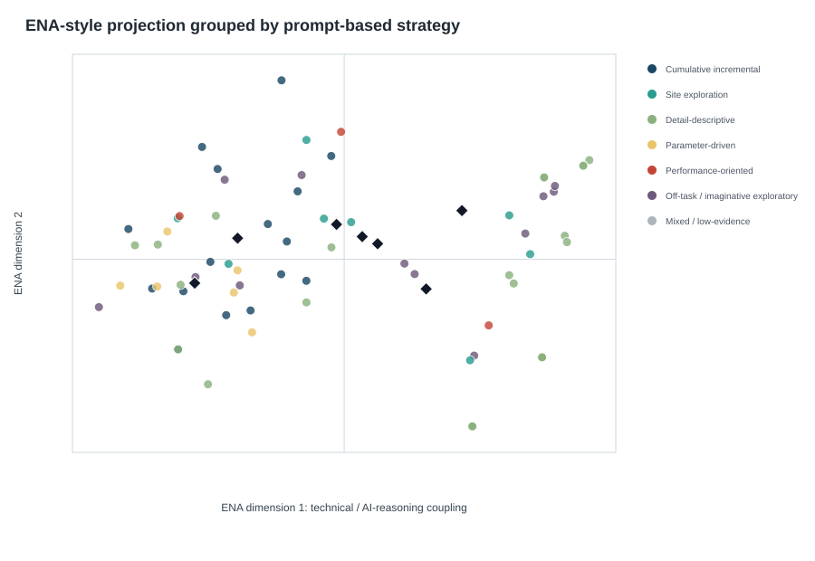
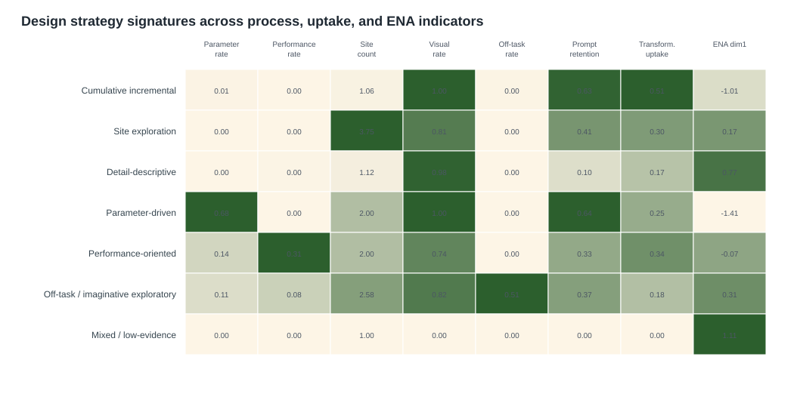
Exploratory links to pre/post learning and agency should be interpreted cautiously because of limited matching. Among students with matched assessment data, parameter-driven designers showed the largest average gain (M = 3.25, n = 4), followed by cumulative incremental designers (M = 2.60, n = 5) and detail-descriptive designers (M = 2.27, n = 11). Off-task / imaginative exploratory designers showed lower average gain in the matched subset (M = 1.00, n = 2). Agency results showed a different pattern: detail-descriptive designers reported high overall agency in the matched survey subset (M = 4.50, n = 4), suggesting that perceived control may emerge through expressive visual design even when technical AI-reasoning coupling is limited.
4.4. ENA-style profile comparison
The ENA-style analysis included 70 student/project networks and 399 design stanzas. ENA dimension 1 explained 53.4% of network variance, while dimension 2 explained 13.7%. Dimension 1 separated technical, goal-directed, AI-reasoning-coupled networks from visual/weak-coupling networks.
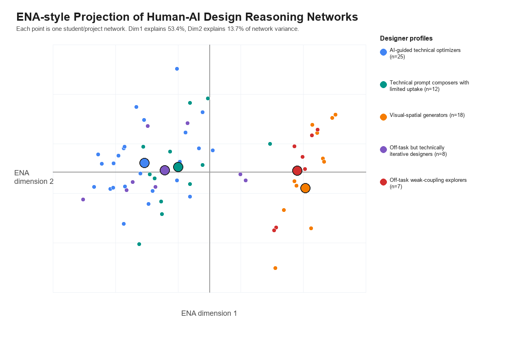
AI-guided technical optimizers were positioned on the negative side of dimension 1 (M = -1.188), as were technical prompt composers (M = -0.569) and off-task but technically iterative designers (M = -0.816). In contrast, visual-spatial generators (M = 1.763) and off-task weak-coupling explorers (M = 1.616) were positioned on the positive side. This pattern indicates that dimension 1 captured the extent to which students integrated goal-directed and technical prompting with AI-generated energy and parameter reasoning and subsequent uptake.
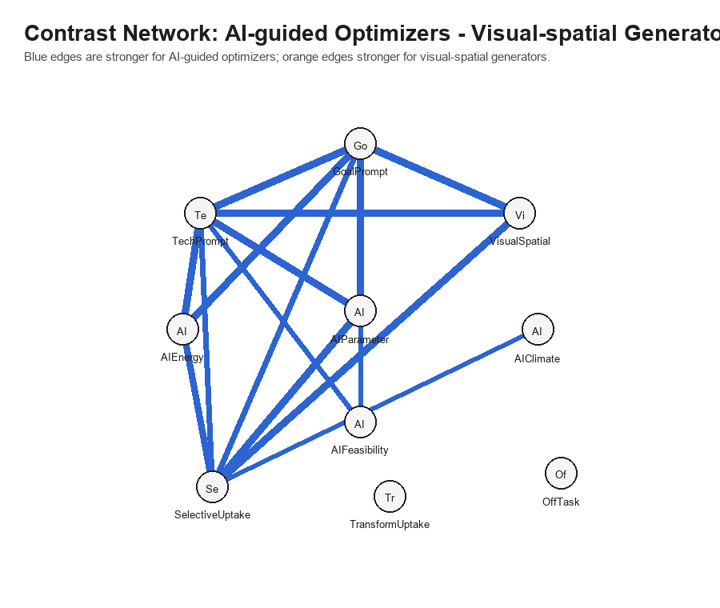
The strongest edges differentiating AI-guided technical optimizers from visual-spatial generators included TechPrompt -> AIParameter, TechPrompt -> AIEnergy, GoalPrompt -> TechPrompt, GoalPrompt -> AIParameter, GoalPrompt -> AIEnergy, and VisualSpatial -> SelectiveUptake. Thus, productive design profiles were distinguished not only by the presence of individual behaviors but also by coherent networks connecting goals, technical parameters, AI reasoning, and uptake.
4.5. Conceptual understanding-based ENA
Follow-up ENA comparisons examined whether students with different levels of conceptual understanding showed different human-AI reasoning network structures. Three grouping strategies were used: pre-test conceptual understanding, post-test conceptual understanding, and learning gain.
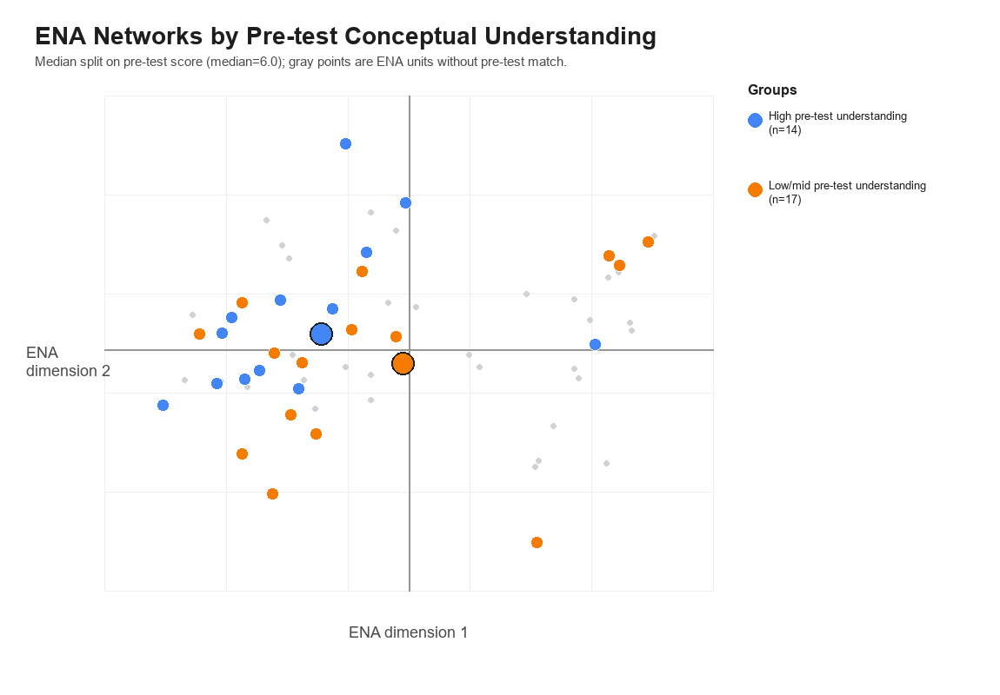
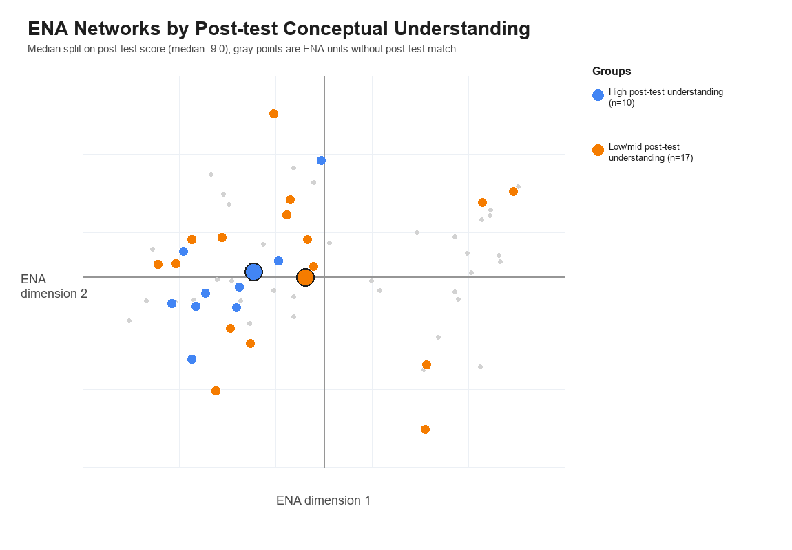
Pre-test-based ENA suggested that students with stronger initial conceptual understanding already exhibited more integrated human-AI engineering reasoning networks. The high pre-test group (n = 14) had a mean ENA dimension 1 score of -0.825, compared with -0.056 for the low/mid pre-test group (n = 17). Edges stronger for the high pre-test group included TechPrompt -> AIParameter, TechPrompt -> AIEnergy, GoalPrompt -> TechPrompt, GoalPrompt -> AIParameter, TechPrompt -> SelectiveUptake, and TechPrompt -> TransformUptake.
Post-test-based ENA showed a similar pattern. The high post-test understanding group (n = 10) had a mean ENA dimension 1 score of -0.834, compared with -0.221 for the low/mid post-test group (n = 17). Stronger edges for the high post-test group included AIClimate -> SelectiveUptake, TechPrompt -> AIClimate, TechPrompt -> AIParameter, TechPrompt -> AIEnergy, TechPrompt -> AIFeasibility, AIEnergy -> SelectiveUptake, and AIEnergy -> TransformUptake.
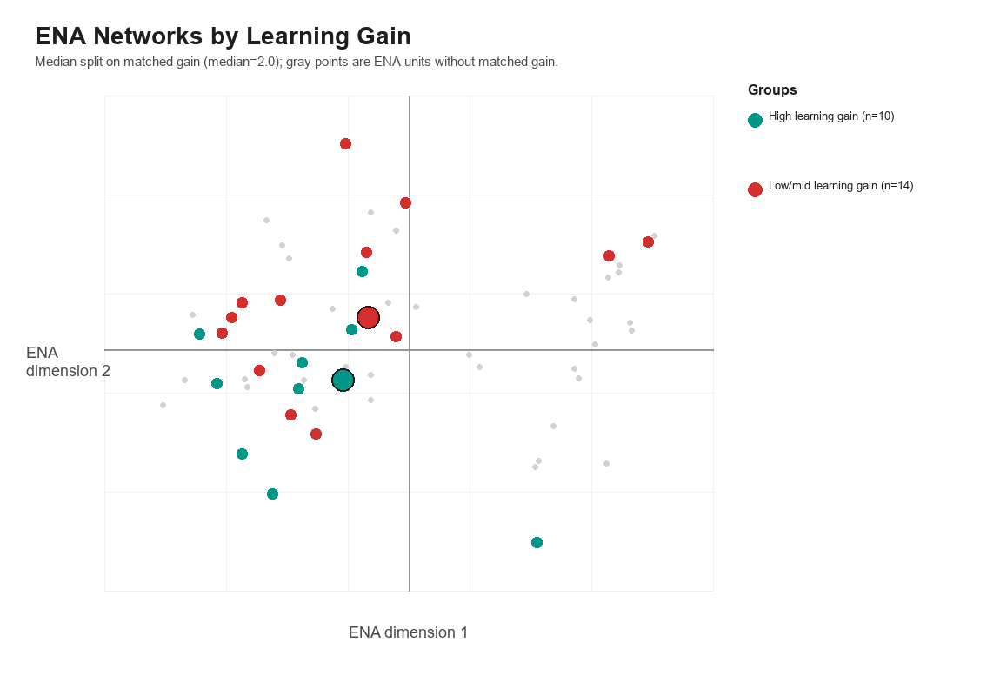
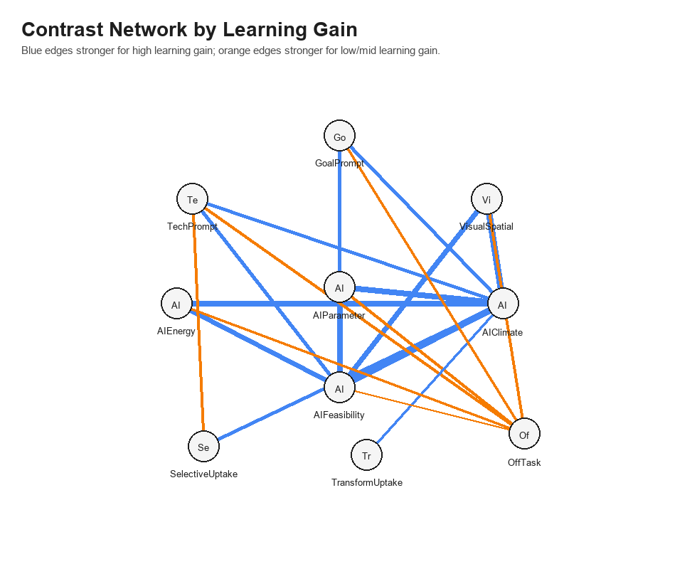
Learning gain-based ENA revealed a more nuanced pattern. High-gain students (n = 10) had a mean ENA dimension 1 score of -0.621, compared with -0.386 for low/mid-gain students (n = 14). The strongest high-gain edges involved AI climate/site and feasibility reasoning, including AIClimate -> AIFeasibility, VisualSpatial -> AIClimate, AIParameter -> AIClimate, AIEnergy -> AIClimate, and AIClimate -> SelectiveUptake. This suggests that conceptual growth may be associated with integrating climate/site reasoning and feasibility constraints into design decisions.
4.6. RQ3: Learning agency
Students reported moderate learning agency overall. Across 38 survey responses, the overall agency mean was 3.41 on a 5-point scale (SD = 0.92). The composite mean for key abilities was 3.44, active actions was 3.32, and mental characteristics was 3.50. The strongest individual dimensions were self-adjustment (M = 3.72) and motivation (M = 3.55), whereas participative action (M = 3.16) and goal setting (M = 3.28) were comparatively lower.
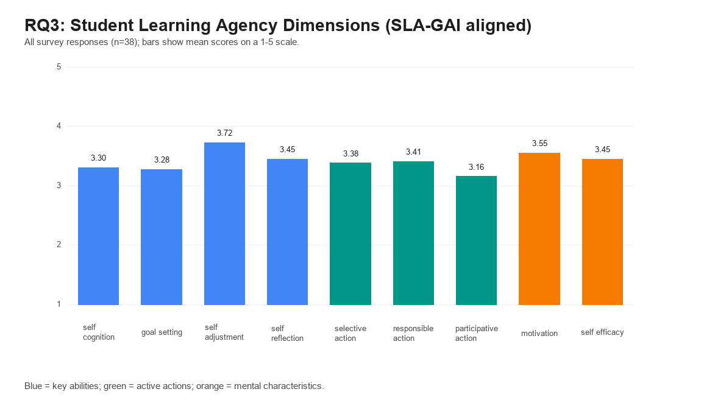
Reliability estimates for the two-item dimensions were acceptable to strong. Cronbach's alpha values were .809 for self-cognition, .928 for goal setting, .746 for self-adjustment, .808 for self-reflection, .874 for selective action, .809 for responsible action, .889 for participative action, and .937 for motivation. The overall 17-item agency score showed high internal consistency, alpha = .961.
Exploratory survey-log integration was possible for 12 matched cases. Goal setting was negatively associated with off-task ratio, rho = -.824, p = .001, and self-cognition was also negatively associated with off-task ratio, rho = -.706, p = .010. Self-adjustment showed a positive association with transformative uptake, rho = .555, p = .061. These patterns suggest that students who reported stronger goal setting and self-cognition were less likely to diverge from the task, while students reporting stronger self-adjustment were more likely to transform AI reasoning into subsequent design action.
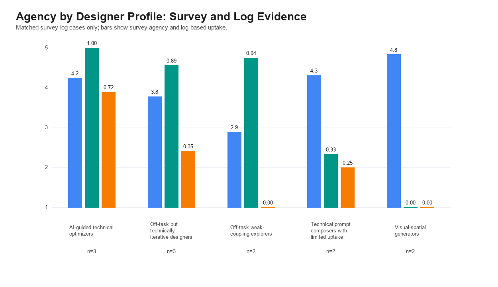
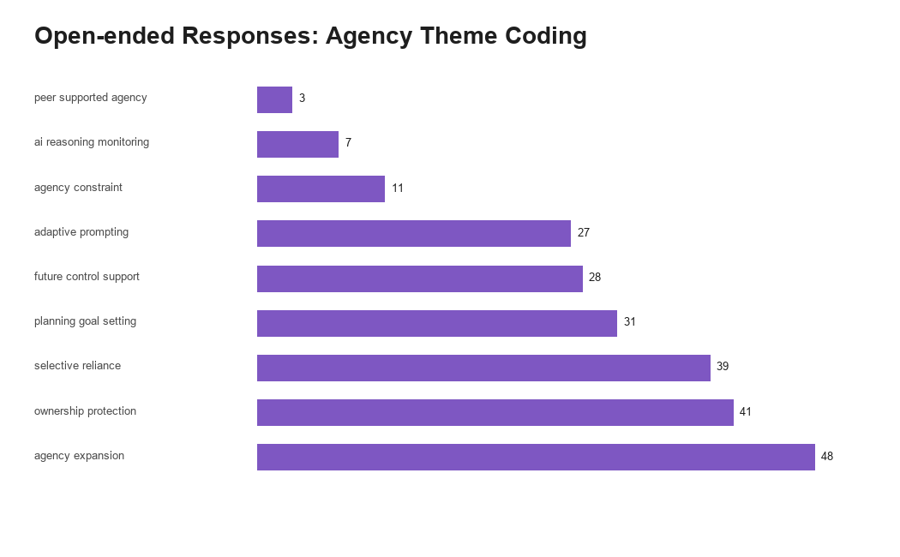
The mixed-methods joint display suggested that agency took different forms across designer profiles. AI-guided technical optimizers showed high self-adjustment and high log-based uptake. Technical prompt composers reported high agency but showed more limited uptake, suggesting that they may have treated AI as an executor of student-defined design intentions. Visual-spatial generators reported high agency but showed minimal AI reasoning uptake, indicating that subjective control may not always correspond to engineering reasoning coupling. Off-task weak-coupling explorers showed the lowest agency scores and no transformative uptake.
5. Discussion
5.1. Conceptual learning in GenAI-CAD design
The findings indicate that students demonstrated significant conceptual gains after engaging in the GenAI-supported CAD activity. Both the ANCOVA-style gain model and the mixed model showed a robust positive change from pre-test to post-test. The mixed model further indicated substantial student-level variance, suggesting that students entered and moved through the activity with different conceptual starting points and learning trajectories.
The negative association between pre-test score and gain indicates that students with lower initial scores tended to improve more. This pattern may reflect ceiling effects among higher-baseline students, greater room for growth among lower-baseline students, or differential support from the GenAI-CAD activity. Because no randomized comparison condition is available, the results should be interpreted as evidence of learning gains following participation rather than as causal evidence that GenAI alone caused improvement.
The item-level results sharpen this interpretation. Students showed the strongest gains on concepts that were highly actionable within the design task: R-value, U-value, solar panel orientation, thermostat setback, and passive solar overhangs. These are concepts that students could potentially encounter as design levers in the GenAI-CAD environment, either by asking for insulation and solar panels or by observing energy consequences in the generated house. Interview evidence was consistent with this pattern: students talked about insulation as a way to save energy, described R-value as increasing with insulation, connected solar panels to lowering net energy, and noticed that location affected heating and air-conditioning use.
At the same time, not all concepts improved equally. The windows / sunlight / radiant heat theme showed little average gain, and Q6 on dark-colored roofs declined. This suggests that visual exposure to a feature is not sufficient for conceptual learning. Students frequently manipulated visible design features such as roofs, windows, solar panels, and colors, but prompt-log evidence suggests they rarely connected roof color with hot climates and radiant energy absorption. In other words, students may have treated roof color as an aesthetic attribute rather than as a thermal-performance variable. This pattern supports the need for instruction and tool scaffolds that explicitly connect visible CAD features to underlying energy mechanisms.
5.2. Productive GenAI use as human-AI reasoning coupling
RQ2 results suggest that productive GenAI-CAD use cannot be understood only by counting prompts or iterations. Students became different types of designers depending on how they connected their own goals with AI-generated reasoning. AI-guided technical optimizers showed dense coupling among technical prompts, performance goals, AI energy reasoning, AI parameter recommendations, and uptake. In contrast, visual-spatial generators showed limited coupling between AI engineering reasoning and subsequent student design moves.
The prompt-based design strategy analysis clarifies the process through which these profiles emerged. Cumulative incremental and parameter-driven strategies were the clearest pathways into technical, AI-reasoning-coupled design profiles. In these trajectories, students did not simply ask the system to generate a house; they repeatedly preserved, extended, or technically specified the design problem. This helped create a sequence in which prior design intentions, AI reasoning, and subsequent student revisions remained connected over time. By contrast, detail-descriptive strategies often produced visual-spatial generator profiles because prompts centered on visible attributes rather than energy reasoning, parameter control, or sustained optimization.
The distinction between performance-oriented and parameter-driven prompting is also important. Asking for a final outcome such as "net zero" expresses a goal, but it does not necessarily specify the design mechanism by which that goal should be reached. Parameter-driven prompting, in contrast, gave students a way to manipulate the building through disciplinary variables such as R-value, U-value, heating and cooling setpoints, PV models, or overhangs. This difference suggests that productive GenAI-CAD learning may require scaffolds that help students translate broad performance goals into actionable engineering parameters.
This distinction is important for GenAI-supported STEM learning. A student can interact with GenAI frequently without necessarily engaging in disciplinary reasoning. Conversely, productive agency appears when students monitor AI reasoning, select relevant ideas, and transform those ideas into their own design decisions. Thus, the key learning process is not simply AI assistance, but the student's active coordination of AI reasoning, design constraints, and evolving goals.
5.3. Prior understanding, conceptual outcomes, and network structure
The conceptual understanding-based ENA analyses add an important layer to the interpretation. Students with higher pre-test scores already showed more integrated technical/AI reasoning networks, suggesting that prior conceptual understanding shaped how students engaged with AI reasoning. This aligns with the broader literature on prior knowledge: students who enter a learning task with stronger conceptual resources may be better able to ask technical questions, interpret AI explanations, and incorporate AI-generated reasoning into subsequent action.
Post-test ENA showed that students with higher final conceptual understanding also had stronger networks linking technical prompting, AI energy reasoning, AI parameter reasoning, climate/site reasoning, feasibility reasoning, and uptake. Learning gain-based ENA further suggested that growth was especially associated with climate/site and feasibility reasoning. This is a meaningful pattern for sustainable building design. Conceptual growth may involve moving beyond isolated design features, such as adding solar panels, toward more situated reasoning about climate, feasibility, and energy performance.
The strategy findings are consistent with this interpretation. Parameter-driven and cumulative incremental designers showed the most technical ENA positions and higher average learning gains in the matched subset, whereas off-task / imaginative exploratory trajectories showed lower gains. Site exploration occupied a more ambiguous position. Changing locations can be a superficial generative variation, but it can also become conceptually productive when students connect site changes to climate, solar availability, heating and cooling demand, and feasibility constraints. Thus, the educational value of site exploration depends on whether geographic variation becomes engineering reasoning rather than merely prompt variation.
5.4. GenAI-CAD and student learning agency
Agency results suggest that students experienced the GenAI-CAD activity as moderately agentic, with particularly strong self-adjustment and motivation. Students reported that they refined prompts, adjusted AI-generated designs, and enjoyed exploring design alternatives. However, goal setting and participative action were lower, suggesting that students may need additional scaffolds to articulate design goals, monitor progress, and collaborate around AI-supported design decisions.
Survey-log integration, although exploratory, provides a useful mechanism. Goal setting and self-cognition were negatively associated with off-task divergence, while self-adjustment was positively associated with transformative uptake. This suggests that agency in GenAI-CAD environments is not merely a motivational state. It is enacted through concrete design practices: setting goals, recognizing one's own capabilities, deciding when to rely on AI, and transforming AI reasoning into student-owned design decisions.
The strategy-level agency results complicate a simple "more technical equals more agency" interpretation. Detail-descriptive designers reported high agency in the matched survey subset even though their logs showed weaker AI engineering-reasoning coupling. This suggests that students can experience agency through expressive control over form, appearance, and spatial configuration. However, expressive agency is not identical to engineering agency. Cumulative incremental and parameter-driven strategies more clearly reflected adaptive engineering agency because students revised prompts over time, engaged with AI reasoning, and used technical constraints to steer the design. Off-task / imaginative exploratory strategies, by contrast, were associated with lower overall agency and weaker transformative uptake, suggesting that playful exploration may become productive only when students retain task goals and reconnect exploration to engineering reasoning.
5.5. Implications for design and instruction
The findings suggest several instructional implications. First, students should be prompted to read and evaluate AI reasoning, not only inspect generated designs. Second, teachers and systems should scaffold goal setting before prompting, because stronger goal setting was associated with less off-task divergence. Third, students should be encouraged to compare AI suggestions with design metrics, climate/site constraints, and feasibility conditions. Fourth, reflection prompts should ask students to explain why they accepted, modified, or rejected AI reasoning. Such scaffolds may support transformative uptake rather than passive acceptance or surface-level generation.
The design strategy typology also suggests targeted scaffolds for different learners. Detail-descriptive designers may benefit from prompts that convert visible features into engineering questions, such as asking how window number, roof shape, or color affects heating, cooling, or solar gain. Performance-oriented designers may need support decomposing an outcome such as net zero into controllable parameters. Site exploration designers may need climate-comparison prompts that ask them to justify how the same design should change across cold, hot, humid, or sunny locations. Off-task / imaginative exploratory designers may benefit from structured opportunities for creative variation followed by a required return to task criteria and energy metrics.
For GenAI-CAD tool design, the results suggest value in dashboards that make reasoning-action links visible. For example, the tool could highlight when AI reasoning mentions insulation, climate, or solar performance and then invite students to decide whether and how to incorporate those ideas into the next design move. Such features could support learning agency by making the student-AI division of labor explicit.
5.6. Limitations and future work
Several limitations should be considered. First, the study does not include a randomized control group, limiting causal inference. Second, the agency survey could be matched to log/profile data for only 12 students because many survey responses lacked names; profile-informed agency results should therefore be interpreted as exploratory. Third, the current coding is rule-based and should be validated through human coding, inter-rater reliability, or a transparent human-AI coding procedure. Fourth, the ENA-style analysis uses a co-occurrence approximation implemented through centered network vectors and SVD rather than external ENA software. Fifth, the study focuses on one GenAI-CAD tool and one sustainable building design task.
The prompt-based design strategy analysis has additional limitations. The strategy labels were derived from rule-based indicators and should be treated as an analytic layer for interpretation rather than a finalized human-coded typology. Some students showed hybrid trajectories, such as site exploration combined with performance-oriented goals, and the dominant-strategy classification necessarily simplified those cases. Future work should validate these strategy categories through independent human coding, report inter-rater reliability, and examine whether multi-label or sequence-clustering approaches capture hybrid trajectories more faithfully.
The item-level and interview triangulation analyses should also be interpreted cautiously. Item-level pre/post comparisons are descriptive and were not modeled with item-response methods. The interview evidence was used to contextualize assessment patterns, but the interview sample was smaller than the full assessment sample and was not designed to estimate theme prevalence. Future work should align interview protocols more directly with assessment constructs and use larger qualitative samples to examine how students explain specific concepts such as roof color, radiant absorption, passive solar design, and thermostat placement.
Future research should use larger samples, stronger experimental or comparison designs, and validated coding workflows. Future studies could also examine how real-time scaffolds for goal setting, AI reasoning evaluation, and transformative uptake affect both conceptual learning and agency in GenAI-supported design environments.
5.7. Conclusion
This study suggests that GenAI-supported CAD learning is most productive when students do more than issue prompts or accept generated designs. Students demonstrated conceptual gains after the activity, but their design processes varied substantially. Productive profiles were characterized by networks that connected student goals, technical prompting, AI-generated engineering reasoning, and uptake into subsequent design moves. The prompt-based design strategy analysis shows how those profiles formed: cumulative incremental and parameter-driven trajectories supported technical human-AI coupling, detail-descriptive trajectories supported expressive design control, and off-task / imaginative trajectories varied depending on whether students returned to engineering goals. Agency emerged through students' ability to set goals, monitor AI reasoning, selectively rely on system support, and transform AI output into student-owned design decisions. These findings position human-AI reasoning coupling as a central mechanism for understanding learning and agency in GenAI-supported STEM design.
References note
This working HTML draft intentionally does not include a finalized reference list. When converting this into a full manuscript, add references for student learning agency in GenAI-supported contexts, ENA, learning analytics/profile analysis, GenAI-supported writing/design learning, and sustainable building design education. The C&E reference papers and SLA-GAI source should be integrated into the Introduction and Method sections.